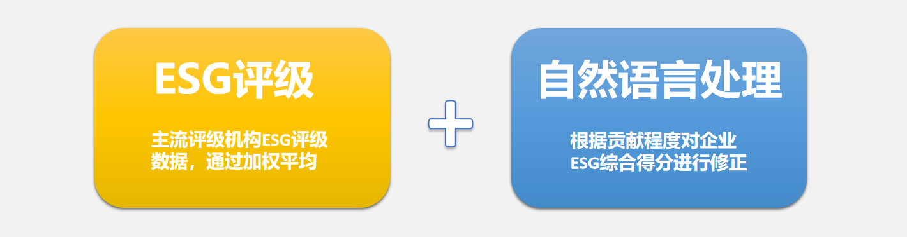
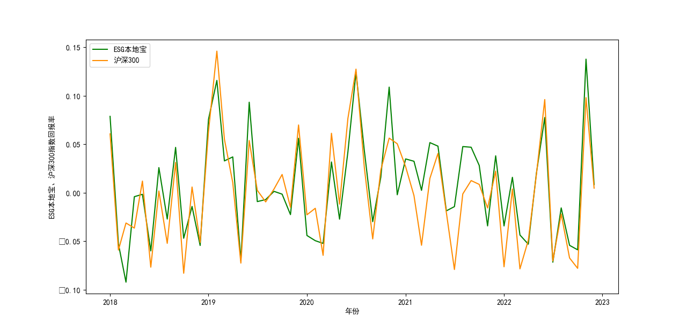

评级体系介绍：综合性ESG投资平台——ESG本地宝
本项目为2022-2023年第十八届 “花旗杯”金融创新应用大赛参赛作品
ESG本地宝是一个综合性ESG投资平台，旨在为广大ESG投资方提供更多ESG信息和投资实践选择。该平台包括ESG主流指标查询、结合地方舆情和环境报告的修正ESG指标查询、因子模型构建和个性化投资组合管理等多种功能，为投资者提供更全面的ESG投资服务。
ESG本地宝选取商道融绿、wind等国内主流评级机构近几年的ESG评级数据，通过加权平均得出各企业的ESG综合得分。同时，平台采用自然语言处理技术从上市公司社会责任报告等相关公告中提取“双碳”、“扶贫”、“乡村振兴”等相关主题词，并根据企业是否涉及该主题及主题词频数评判企业对所在地的环境治理、脱贫攻坚等的贡献。根据贡献程度对企业ESG综合得分进行修正，最终得到ESG本地宝评分。ESG本地宝评分综合了各类评级机构的评级特色并弥补了现有评级体系的不足，能够更加全面地反映各企业的ESG表现。

除了ESG评分，ESG本地宝还构建了包含ESG因子的四因子模型，提供用户考虑ESG因素的企业估值，方便投资者进行符合ESG投资理念的投资决策。此外，平台还以沪深300成分股为样本区间，筛选出ESG本地宝评分排名前10%的股票，构建了ESG本地宝指数，年度调仓，能够为投资者提供更全面的投资建议。通过市场回测，ESG本地宝指数收益可观，在近五年大部分时候能够跑赢沪深300。
此外，ESG本地宝平台还提供了查询当下主流评级机构的ESG评级数据和企业本地化等功能，方便投资者对比各评级机构的评级数据，做出更好的投资选择。综上所述，ESG本地宝平台是一个综合性的ESG投资平台，为投资者提供了全面、可靠的ESG评价和投资建议。
ESG本地宝
- 郑重声明
- 本项目为2022-2023年第十八届
“花旗杯”金融创新应用大赛参赛作品。
网站上所有信息均不作为正式投资建议。
- 联系我们
- 1111111111@qq.com
- 地址
- 湖北省武汉市....